( UX case study — Healthcare navigation app )
Pineapple: healthcare access, made clear.
One app for booking care, checking insurance and estimating costs — UX research, prototyping and usability testing.
How might we…
…design a healthcare platform that simplifies scheduling, clarifies insurance coverage and ensures financial transparency for diverse users in Chicago?
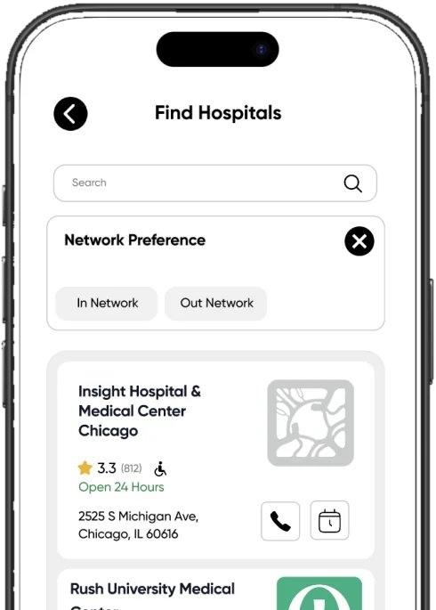
The problem
One in five U.S. adults under 65 face non-cost barriers to care, like appointment delays and transportation limits. In Chicago we found “maternity care deserts” and big gaps in access to in-network providers.
The approach
A team project covering UX research, prototyping and usability testing. We moved beyond national datasets to document how patients actually navigate a system that pushes the work of coordination onto them.
Designed for clarity, coverage, and confidence.
( Process )From research to personas, through three rounds of design, to usability testing — removing features at every step to make booking and billing clearer.
+ [ Research & Synthesis ]
Competitive analysis
Zocdoc and MyChart: strengths, gaps and opportunities
12 interviews
Ages 20–72, 15–30 minutes, over Zoom or in person
Affinity mapping
Goals, frustrations and user quotes, sorted into themes
+ ( About it & Examples )
Even health-literate professionals were worn out by the back-and-forth between insurers and providers. International students described an extra layer of “administrative complexity” that delayed their care.
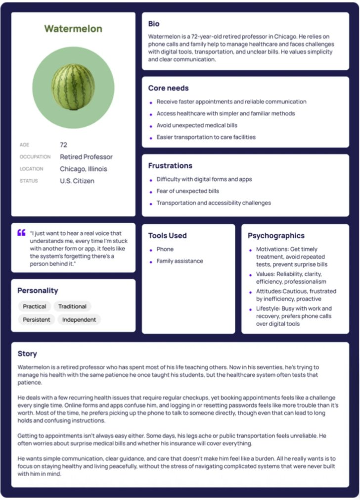
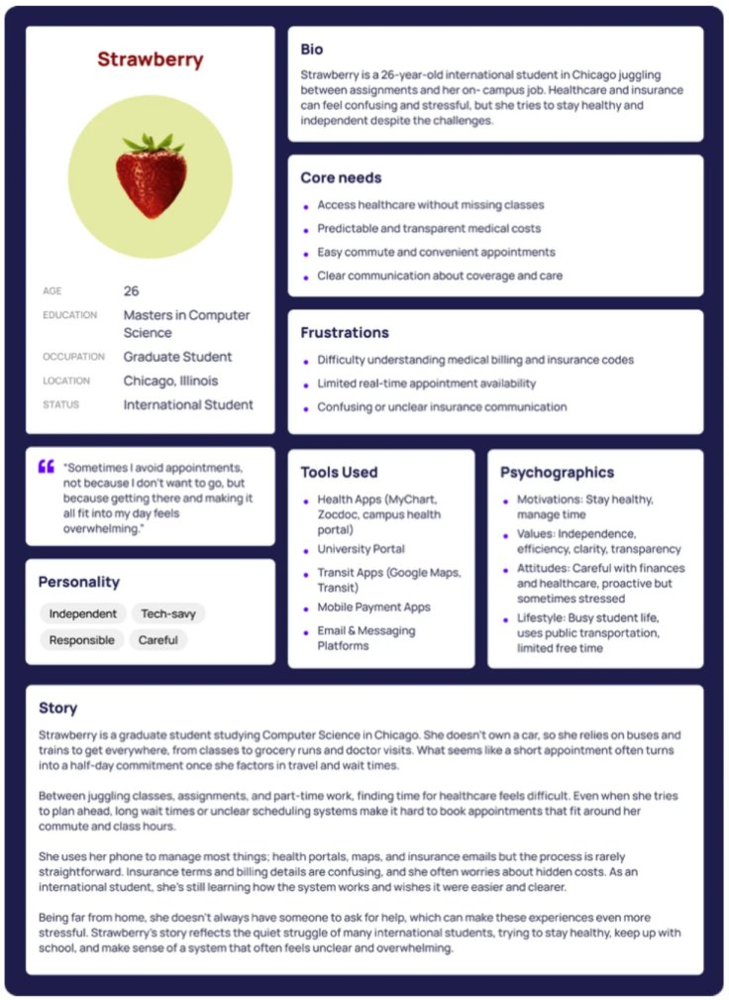
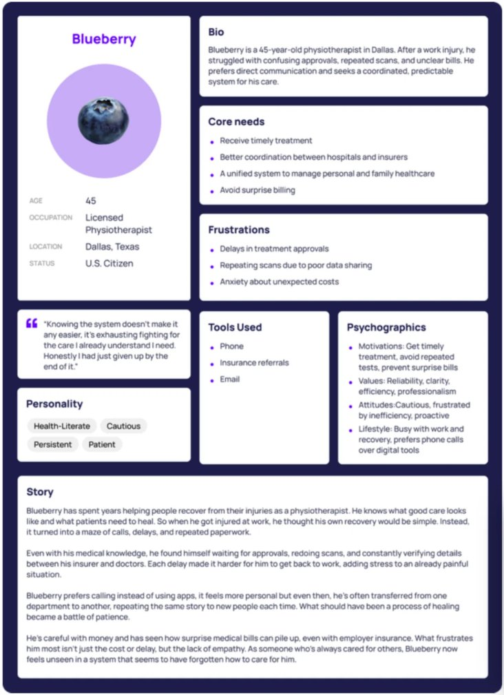
+ [ Ideation & Iteration ]
Version 1
Paper prototypes and information architecture
Version 2
Digital grid layout with color-coded categories
Version 3
Minimal white look with blue line-art icons
+ ( About it & Examples )
Pineapple was not a straight line. Each version took us from a broad concept to a focused app — “subtracting to add value” by keeping only the booking and billing features users needed most.
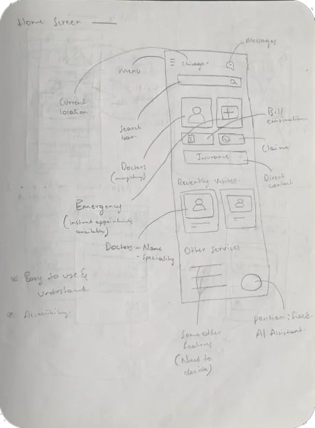
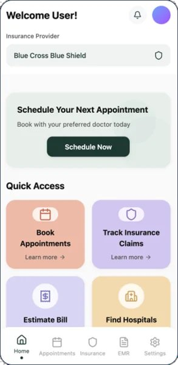
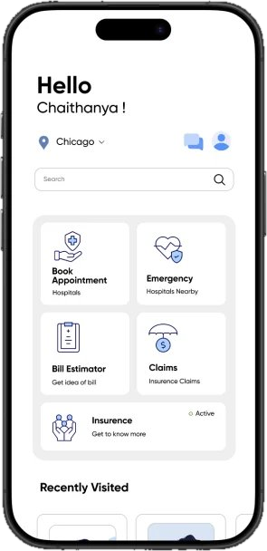
+ [ Core Features ]
Find hospitals
Network filtering shows what your insurance covers
Filter by date or problem
Find specialists by symptom or appointment date
Bill estimation
A detailed cost projection before you book
Insurance management
Scan a card with OCR and sync your coverage
+ ( About it & Examples )
No more surprise bills: pick a hospital, doctor and procedure, and Pineapple shows a detailed estimate before the appointment.
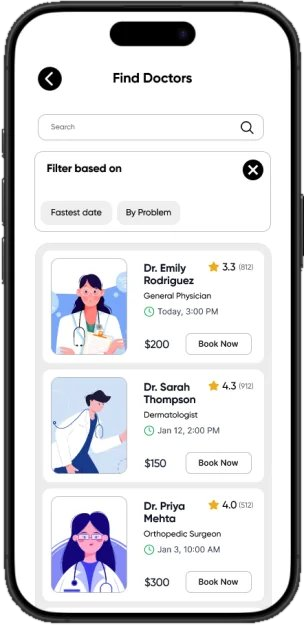
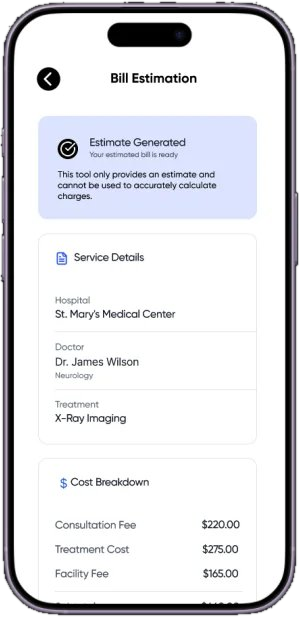
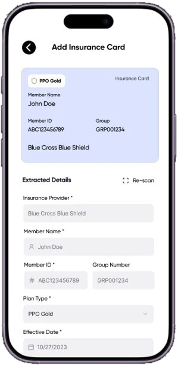
What we learned ?
We ran four remote usability tests. Each participant played a student with a sprained wrist who needed an in-network appointment: find the earliest slot, then check the cost estimate.
Clarity comes from removing features, not adding them — and small changes to touch targets and labels build older users’ confidence.
View full case study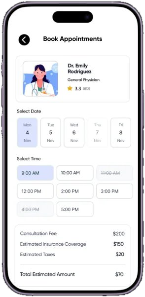
What testing revealed
( 4 remote usability tests )Missing integrations
Users expected standard features we hadn’t built: hospital addresses that open in Google Maps, Uber/Lyft rides and syncing appointments to their own calendars.
Onboarding friction
The “insurance-first” flow blocked people without insurance, so the next version needs a self-pay or guest path.
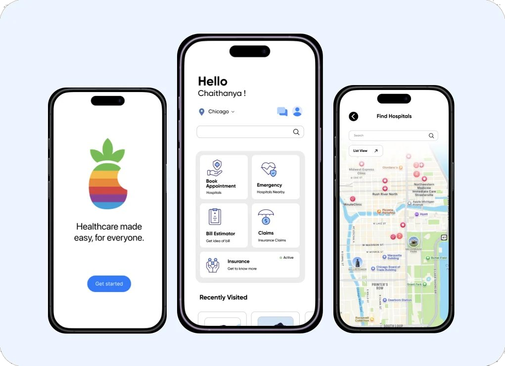